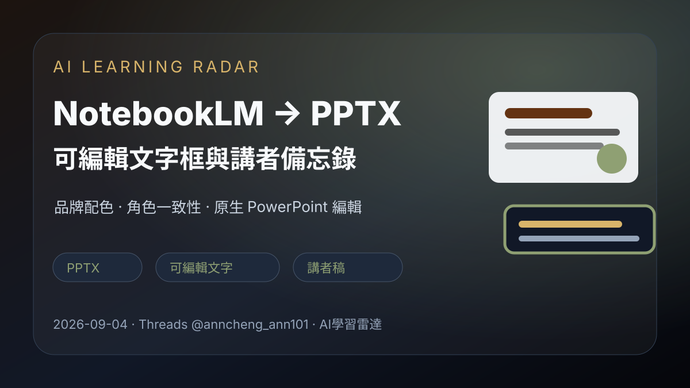
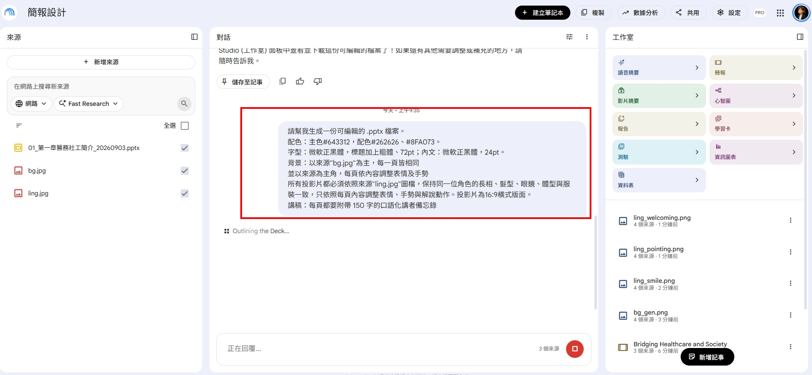
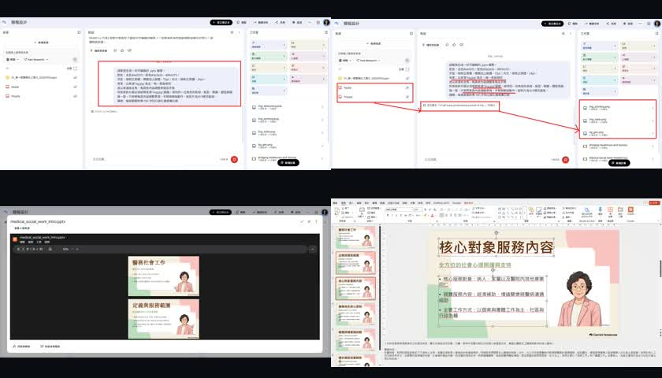

Threads｜Ann Cheng：NotebookLM 可編輯 PPTX 簡報輸出提示詞

一句話摘要
Ann Cheng 實測 NotebookLM 產生簡報的新能力：可提示輸出「可編輯的 .pptx」，讓標題與內文保留為 PowerPoint 原生文字框，而不是整張投影片被壓成死圖；同時可指定配色、字型、背景圖、角色圖一致性與每頁講者備忘錄。本文保存貼文提示詞與判讀重點，作為 AI 簡報生成工作流案例。
來源脈絡
- Threads 分享連結：https://www.threads.com/share/_1jQKpxBZ/
- Canonical：https://www.threads.com/@anncheng_ann101/post/Dc2RFi2AddJ
- 作者：Ann Cheng（@anncheng_ann101）
- 貼文主張：NotebookLM 做簡報不再只能匯出「整張無法編輯的死圖」，實測可直接下載標題與內文皆為原生文字框的 `.pptx`。
- 注意：本文保存的是社群實測工作流與提示詞；實際功能介面、可用帳號與輸出品質可能隨 NotebookLM 更新而變動。
代表畫面

貼文提供的核心提示詞
```text
請幫我生成一份可編輯的 .pptx 檔案。
配色：主色 #643312，配色 #262626、#8FA073。
字型：微軟正黑體，標題加上粗體、72pt；內文：微軟正黑體，24pt。
背景：以來源 'bg.jpg' 為主，每一頁皆相同。
並以來源為主角，每頁依內容調整表情及手勢。
所有投影片都必須依照來源 'ling.jpg' 圖檔，保持同一位角色的長相、髮型、眼鏡、體型與服裝一致，只依照每頁內容調整表情、手勢與解說動作。投影片為 16:9 橫式版面。
講稿：每頁都要附帶 150 字的口語化講者備忘錄。
```
實測回饋重點
貼文描述打開 PowerPoint 後的結果：
- 標題與內文是 PowerPoint 原生文字框，可以反白、點選與直接改字。
- 角色立繪會自動融入右下角解說位置，並依內容調整表情與手勢。
- 每頁底下的講者備忘錄會產出約 150 字口語化講稿，可直接照稿練習或上台。
畫面證據

這個提示詞的可重用結構
可拆成六個模組：
- 輸出格式：明確要求「可編輯的 .pptx 檔案」。
- 視覺規格：指定主色、輔色、字型、標題與內文字級。
- 固定素材：指定背景圖 `bg.jpg` 每頁一致。
- 角色一致性：指定主角來源圖 `ling.jpg`，要求臉、髮型、眼鏡、體型、服裝一致。
- 動作變化：只依每頁內容調整表情、手勢、解說姿態。
- 講者備忘錄：每頁附 150 字口語化 speaker notes。
為什麼值得收進 AI 學習雷達
- 它把 AI 簡報從「看起來像簡報的圖片」推進到「可交付、可改字、可上台使用的 PowerPoint 檔」。
- 對課程、工作坊、提案簡報很實用：先用 NotebookLM 讀來源資料，再產出可編輯 deck 與講稿。
- 對欒帥的課程與知識庫工作流，可延伸成：文章 → 教學簡報 → 講者稿 → 課堂素材的一條龍流程。
- 提示詞把品牌設計、角色一致性與講稿規格寫清楚，適合作為未來 PPT 自動化的 prompt template。
導入前檢核
- 是否真的輸出 `.pptx`，且文字是可編輯文字框，而非圖片？
- 是否每頁都保留背景與角色一致性？
- 字體若跨平台開啟，是否會被替換？必要時可改成系統通用字型或嵌入字型。
- 講者備忘錄是否符合課程口吻、時間長度與專業程度？
- 若素材含真人照片或版權圖，是否有授權可用於公開簡報？
可改寫成通用模板
```text
請根據我提供的來源資料，生成一份可編輯的 .pptx 簡報檔案。
版面：16:9 橫式。
風格：[品牌/課程/提案風格]。
配色：主色 [HEX]，輔色 [HEX, HEX]。
字型：標題 [字型/大小/粗細]；內文 [字型/大小]。
背景：以來源 [背景檔名] 為主，每頁保持一致。
角色/主視覺：以來源 [角色檔名] 為主，保持外觀一致，只依內容調整表情、手勢與位置。
內容要求：每頁標題與內文都必須是 PowerPoint 原生可編輯文字框。
講稿：每頁附 [字數] 字口語化講者備忘錄。
```
原始連結
Threads：